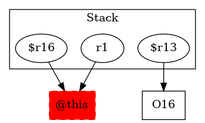

-1 : r1 := @this: Test4
16 : $r13 = new testcase.Test4$1LocalClass
-1 : $r16 = (testcase.Test4) r1
16 : specialinvoke $r13.|testcase.Test4$1LocalClass: void |init|(testcase.Test4)|($r16) -> class soot.jimple.internal.JInvokeStmt
18 : $r14 = new testcase.Test4
18 : specialinvoke $r14.|testcase.Test4: void |init|()|()
19 : $r15 = new testcase.Test4
19 : specialinvoke $r15.|testcase.Test4: void |init|()|()
22 : $r7 = virtualinvoke $r13.|java.lang.Object: java.lang.Class getClass()|()
22 : $r8 = newarray (java.lang.Class)[2]
22 : $r8[0] = class "Ltestcase/Test4;"
22 : $r8[1] = class "Ltestcase/Test4;"
22 : $r9 = virtualinvoke $r7.|java.lang.Class: java.lang.reflect.Method getMethod(java.lang.String,java.lang.Class[])|("add", $r8)
22 : $r10 = newarray (java.lang.Object)[2]
22 : $r10[0] = $r14
22 : $r10[1] = $r15
23 : $r11 = virtualinvoke $r9.|java.lang.reflect.Method: java.lang.Object invoke(java.lang.Object,java.lang.Object[])|($r13, $r10)
22 : $r12 = (java.lang.Integer) $r11
22 : i0 = virtualinvoke $r12.|java.lang.Integer: int intValue()|()
25 : return i0
